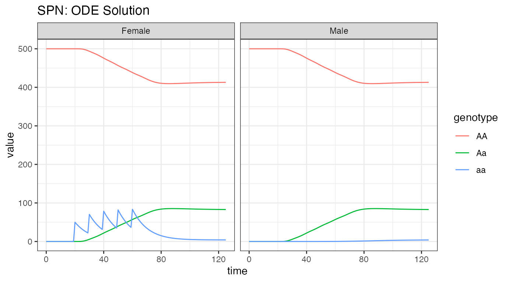
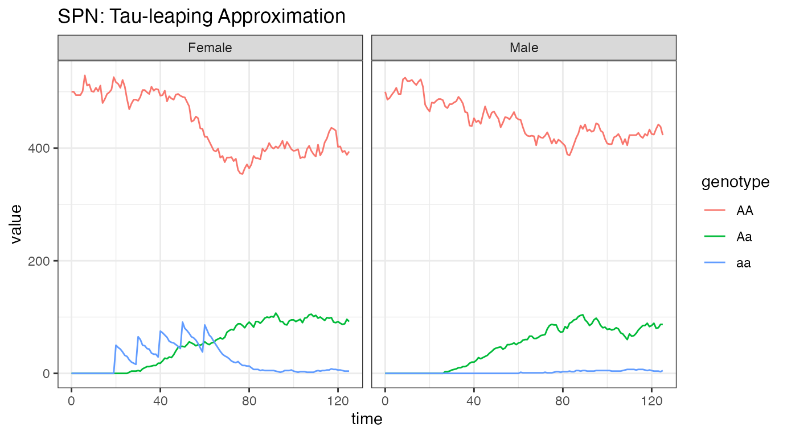
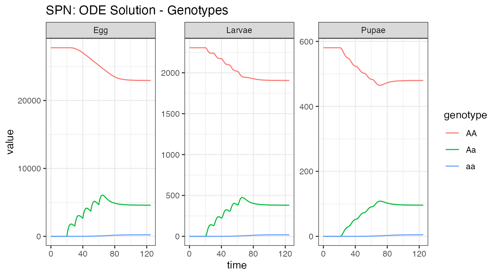
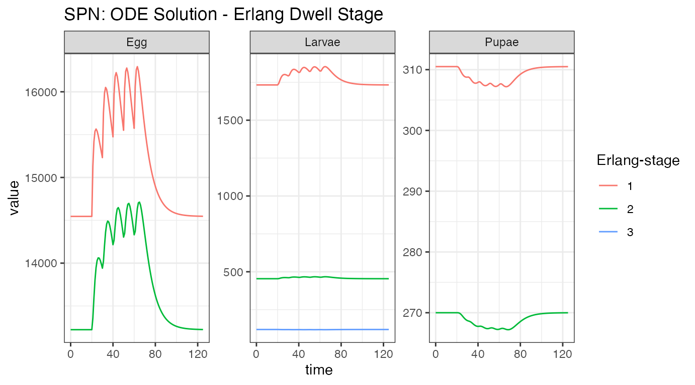
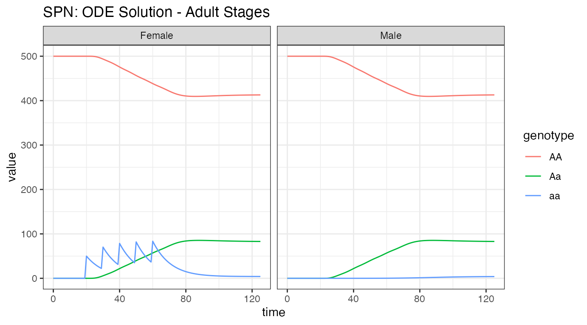
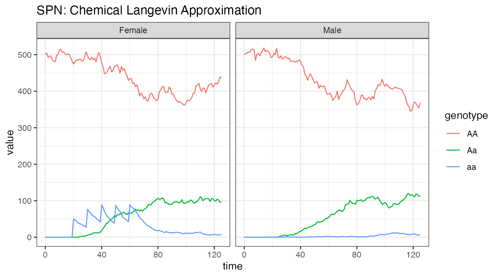

Table of Contents
Preface
In this vignette, we show how to run MGDrivE2
simulations using a variety of sampling techniques, including
deterministic integration with ODE solvers from the deSolve
package. We demonstrate a logistic (carrying capacity) form of larval
mortality as well as the Lotka-Volterra form. While the behavior of the
two types of density-dependent mortality will be nearly identical,
because they are both quadratic in the number of larvae, this is meant
to demonstrate the relative ease at which new density-dependent (and in
general, any hazard, see “MGDrivE2:
Simulation of Time-inhomogeneous Stochastic Processes (Seasonality)”
for a more complex example) functions can be swapped as necessary for
the simulation task at hand.
Example: Logistic Density Dependence
We start by loading the MGDrivE2 package, as well as the MGDrivE package for access to inheritance cubes and ggplot2 for graphical analysis. We will use the basic cube to simulate Mendelian inheritance for this example.
# simulation functions
library(MGDrivE2)
#> Loading MGDrivE2: Mosquito Gene Drive Explorer Version 2
# inheritance patterns
library(MGDrivE)
#> Loading MGDrivE: Mosquito Gene Drive Explorer
# plotting
library(ggplot2)
# basic inheritance pattern
cube <- MGDrivE::cubeMendelian()Parameterization
Next, we set entomological parameters that dictate life-history characteristics, as well as the equilibrium number of adult female mosquitoes. The density dependent per-capita larval mortality is thus: , where is the current larval population size. Note that when the population is zero there is no effect of density dependence.
The parameters qE, qL, and qP
are the mean dwell times in the egg, larval, and pupae stages,
respectively. The Erlang distributed aquatic stages allow users to
select the mean and variance of the dwell time distribution for each
stage. For example,
will give the mean dwell time in the egg stage, and variance
.
A table of (case-sensitive) biological parameters the user needs to
specify is given below (Note that all parameters must be specified as
rates per day). The equilibrium constant for larval
density dependence (K) is returned when equilibrium is
calculated.
The nu parameter gives the rate at which unmated female
mosquitoes mate when males become available again. Ordinarily, female
mosquitoes are assumed to mate upon emergence if males are present.
However if male mosquitoes become locally extinct and are later
replenished either by currently developing egg batches or releases (or
for metapopulation simulations, inbound male migration), then there will
be some time where newly emerging adult females are unable to find
mates. These unmated female mosquitoes experience mortality at the same
rate as mated females, muF. Because they are unmated, they
do not produce eggs, nor do they blood-feed (which is done in order to
provision developing egg batches). While blood-feeding behavior doesn’t
matter for lifecycle simulations, this means that for the
epidemiological simulations we don’t need to worry about unmated females
becoming infected, because they will not be biologically primed for this
behavior until after they have mated and need to produce egg batches.
Once males become available, they will mate at rate nu.
| Parameter | Description |
|---|---|
qE |
inverse of mean duration of egg stage |
nE |
shape parameter of Erlang-distributed egg stage |
qL |
inverse of mean duration of larval stage |
nL |
shape parameter of Erlang-distributed larval stage |
qP |
inverse of mean duration of pupal stage |
nP |
shape parameter of Erlang-distributed pupal stage |
muE |
density-independent egg mortality |
muL |
density-independent larval mortality |
muP |
density-independent pupal mortality |
muF |
density-independent adult female mortality |
muM |
density-independent adult male mortality |
beta |
rate of egg production in adult females |
nu |
mating rate of unmated females |
# number of adult female mosquitoes
NF <- 500
# entomological parameters
theta <- list(
qE = 1/4,
nE = 2,
qL = 1/3,
nL = 3,
qP = 1/6,
nP = 2,
muE = 0.05,
muL = 0.15,
muP = 0.05,
muF = 0.09,
muM = 0.09,
beta = 16,
nu = 1/(4/24)
)Initialization of the Petri Net
The next thing we need to do is set up the structural properties of the SPN model (technically just a Petri Net, PN, at this point). First, we set all of the “places” in the model. As this is a compartmental model, “places” are simply distinct life stages (and locations for metapopulation versions). Thus, the “places” include all aquatic stages (number of bins in each egg, larval, and pupal stages), adult males, and adult females (further separated by mate genotype). All of these stages are unique for each genotype as well, so the number of “places” (i.e., compartments) grows with the number of genotypes and Erlang-distributed stage length.
Once the places for the SPN are setup, we define the transitions
between each place. Transitions are how objects move from one
compartment to another. These are not the rates that objects change
compartments, only whether or not such a move is possible. The rate of
movement from one “place” to another are calculated later by the
spn_hazards() function.
Finally, as not all transitions apply to all “places”, we create a
summary of possible transitions to and from each “place”. This is
handled by the spn_S() function.
# "Places"
# These are defined by Erlang-distributed life stages and genotypes
SPN_P <- spn_P_lifecycle_node(params = theta,cube = cube)
# Transitions
# This is a list of viable transitions from one "place" to another
SPN_T <- spn_T_lifecycle_node(spn_P = SPN_P,params = theta,cube = cube)
# Stoichiometry matrix
# A sparse matrix representing the effect of each transition on each place
S <- spn_S(spn_P = SPN_P, spn_T = SPN_T)Equilibrium Conditions and Hazard Functions
Once the “places” are defined, we use
equilibrium_lifeycle() to get initial conditions
(),
solved at the dynamic equilibrium for NF number of adult
females, as well as the density-dependent constants for larval
competition, either K (logistic dependence) or
gamma (Lotka-Volterra dependence).
# calculate equilibrium and setup initial conditions
# outputs required parameters in the named list "params"
# outputs intial equilibrium for adv users, "init
# outputs properly filled initial markings, "M0", vectorized over:
# all patches
# any genotypes( includes XX/XY inheritance patterns)
# allows initial ratios to vary
# properly mates males/females
initialCons <- equilibrium_lifeycle(params = theta, NF = NF, phi = 0.5,
log = TRUE, spn_P = SPN_P, cube = cube)The transitions in our SPN define possible movement from one
compartment to another, but they do not define the rate that these
changes occur. The rate of change from one compartment to another is
called a “hazard”, calculated by the spn_hazards()
function. This calculates the rate of change from one compartment to
another. Below, we make both a set of exact hazards, for sampling
algorithms with integer valued state spaces, and a set of approximate
hazards, for algorithms using a continuous approximation.
# approximate hazards for continous approximation
approx_hazards <- spn_hazards(spn_P = SPN_P, spn_T = SPN_T, cube = cube,
params = initialCons$params, type = "life",
log = TRUE, exact = FALSE, tol = 1e-8,
verbose = FALSE)
# exact hazards for integer-valued state space
exact_hazards <- spn_hazards(spn_P = SPN_P, spn_T = SPN_T, cube = cube,
params = initialCons$params, type = "life",
log = TRUE, exact = TRUE, tol = NaN,
verbose = FALSE)Simulation of Fully Specified SPN Model
Finally, before we run simulations, we set up a release scheme to
generate interesting dynamics. We will release 50 adult females with
homozygous recessive alleles 5 times, every 10 days, starting at day 20.
Releases are possible at every life-stage, so long as the event name
matches the place in the simulation. It is critically important that
the event names match a place name in the simulation.
The simulation function checks this and will throw an error if the event
name does not exist as a place in the simulation. This format is used in
MGDrivE2 for consistency with solvers in
deSolve.
# releases
r_times <- seq(from = 20, length.out = 5, by = 10)
r_size <- 50
events <- data.frame("var" = paste0("F_", cube$releaseType, "_", cube$wildType),
"time" = r_times,
"value" = r_size,
"method" = "add",
stringsAsFactors = FALSE)Deterministic: ODE Solutions
The first simulation we will run is a mean-field deterministic
approximation to the full stochastic model. Formally, this is a
moment-closure technique where we model the 1st moment and ignore
contributions from all higher order moments, so we can expect that the
ODEs will approximate the mean of stochastic simulations well only when
nonlinear effects and influence of higher order moments are small. For
this continuous-state approximation, we need to use the approximate
hazards, created by setting the following parameters
exact = FALSE, tol = 1e-8 (above) in the function
spn_hazards(). When used in ODE approximation, the
interpretation of hazard functions simplifies to simple rate
functions.
Internally, MGDrivE2 uses the high quality numerical
solvers in from deSolve to integrate a mean-field
approximation to the stochastic model. Effectively, it evaluates the
ODEs over the interval between time points where the user requested
model output, calculating the rate of that hazard, given the current
simulation state, multiplied with the stoichiometry matrix. The default
method used is lsoda, though for highly variable rates and
inhomogeneous systems, consider using rk4.
Now that the deterministic model is fully specified, let’s run the simulation for 200 days, outputting values of the state variables every day.
# max simulation time
tmax <- 125
# time-step for output return, not the time-step of the sampling algorithm
dt <- 1
# run deterministic simulation
ODE_out <- sim_trajectory_R(x0 = initialCons$M0, tmax = tmax, dt = dt, S = S,
hazards = approx_hazards, sampler = "ode", method = "lsoda",
events = events, verbose = FALSE)MGDrivE2 has several helper functions for summarizing simulation data in a nice format for plotting. Here, we will look at the adult male and female data, though there are many more options explored below.
# summarize females by genotype
ODE_out_f <- summarize_females(out = ODE_out$state, spn_P = SPN_P)
# summarize males by genotype
ODE_out_m <- summarize_males(out = ODE_out$state)
# add sex for plotting
ODE_out_f$sex <- "Female"
ODE_out_m$sex <- "Male"
# plot
ggplot(data = rbind(ODE_out_f, ODE_out_m)) +
geom_line(aes(x = time, y = value, color = genotype)) +
facet_wrap(facets = vars(sex), scales = "fixed") +
theme_bw() +
ggtitle("SPN: ODE Solution")
We see the initial equilibrium at 500 females, as was set above, and
500 males, because we defined an equal sex breakdown in the population.
At time t = 25, we see the first release of aa
females into the population, and then the 4 subsequent releases. Notice
that releases only appear in the females, nothing was released into the
males. Since there are no fitness costs, we see the aa
individuals come to equilibrium predominantly as heterozygotes,
i.e. Aa, with a very small fraction of homozygotes, and the
majority of the population remaining AA.
Stochastic: Tau-leaping Solutions
For stochastic simulations, we generally rely on tau-leaping; this
method retains the integer valued state space, thus necessitating the
use of exact hazards. The theoretical basis of tau-leaping depends upon
realizing that each transition can be represented as a Poisson process;
tau-leaping is therefore an Euler-method for solving continuous-time
Markov chains where the “tau-leaping” refers to a fixed time-step of
size “tau”, where the number of each transition that fires over such a
time-step
()
is approximated by a Poisson random variable with a linear approximation
to the cumulative hazard. This is provided as the dt_stoch
an argument to the function sim_trajectory_R().
We set tau as our sampler type, use the same release
events, conditions, and stoichiometry matrix as above, set the exact
hazards instead of the approximate, and finally run the simulation and
plot the output.
# delta t
dt_stoch <- 0.1
# tau sampling
PTS_out <- sim_trajectory_R(x0 = initialCons$M0, tmax = tmax, dt = dt,
dt_stoch = dt_stoch, S = S, hazards = exact_hazards,
sampler = "tau", events = events, verbose = FALSE)
# summarize females/males
PTS_out_f <- summarize_females(out = PTS_out$state, spn_P = SPN_P)
PTS_out_m <- summarize_males(out = PTS_out$state)
# add sex for plotting
PTS_out_f$sex <- "Female"
PTS_out_m$sex <- "Male"
# plot adults
ggplot(data = rbind(PTS_out_f, PTS_out_m)) +
geom_line(aes(x = time, y = value, color = genotype)) +
facet_wrap(facets = vars(sex), scales = "fixed") +
theme_bw() +
ggtitle("SPN: Tau-leaping Approximation")
As Tau-leaping is a stochastic approximation of our system, we should
see some variation around the solution provided by the ODE simulation
above. These simulations begin at the proper equilibrium amount, 500
individuals of each sex, with releases performed in females and an
equilibrium shortly thereafter. The plots are heuristically similar to
the ODE solution, which is good, but notice the slow trend of
Aa individuals towards extinction. Since there is such a
small amount of a alleles in the population, they are
steadily being lost through stochastic drift. If we carried the
simulations out longer, it is possible that the a allele
will be completely lost from the population.
Example: Lotka-Volterra Density Dependence
Now we will show an example with the Lotka-Volterra style density dependence in larval stages. Please note that we do not need to recreate the structural pieces of the Petri Net (places and transitions), or update any of the parameters, because they remain the same; we simply need to calculate a new equilibrium point and generate new hazards.
Equilibrium Conditions and Hazard Functions
To use Lotka-Volterra density dependence, we need to recalculate the
equilibrium and then rebuild the hazard functions. The per-capital
larval mortality is
,
noted by log = FALSE in the options to
equilibrium_lifeycle().
# using the same parameters as above, along with the SPN_P object already created
# calculate equilibrium for lotka-volterra dynamics
initialCons <- equilibrium_lifeycle(params = theta, NF = NF, phi = 0.5,
log = FALSE, spn_P = SPN_P,cube=cube)We now follow the same steps as before to make the vector of hazards
(setting log = FALSE).
# approximate hazards for continous approximation
approx_hazards <- spn_hazards(spn_P = SPN_P, spn_T = SPN_T, cube = cube,
params = initialCons$params, type = "life",
exact = FALSE, tol = 1e-8, verbose = FALSE,
log = FALSE)
# exact hazards for integer-valued state space
exact_hazards <- spn_hazards(spn_P = SPN_P, spn_T = SPN_T, cube = cube,
params = initialCons$params, type = "life",
exact = TRUE, tol = NaN, verbose = FALSE,
log = FALSE)Simulation of Fully Specified SPN Model
We will use the releases defined above, and again begin with an ODE solution to our system, before testing a different stochastic sampler.
Deterministic: ODE Solutions
As before, we run an ODE simulation, but this time we will plot the aquatic stages in two ways: looking at their genotypes over time, and looking at the progress through Erlang-distributed stages.
# deterministic simulation
ODE_out <- sim_trajectory_R(x0 = initialCons$M0, tmax = tmax, dt = dt,
S = S, hazards = approx_hazards, sampler = "ode",
events = events, verbose = FALSE)
# summarize aquatic stages by genotype
ODE_out_e <- summarize_eggs_geno(out = ODE_out$state, spn_P = SPN_P)
ODE_out_l <- summarize_larvae_geno(out = ODE_out$state, spn_P = SPN_P)
ODE_out_p <- summarize_pupae_geno(out = ODE_out$state, spn_P = SPN_P)
# add stage name
ODE_out_e$stage <- "Egg"
ODE_out_l$stage <- "Larvae"
ODE_out_p$stage <- "Pupae"
# plot by genotype
ggplot(data = rbind(ODE_out_e, ODE_out_l,ODE_out_p)) +
geom_line(aes(x = time, y = value, color = genotype)) +
facet_wrap(facets = vars(stage), scales = "free_y") +
theme_bw() +
ggtitle("SPN: ODE Solution - Genotypes")
Notice the vastly different equilibrium number for the aquatic
stages. These values are parameterized from the adult female value, and
the death rates at each stage. Notice that the “releases” here appear to
be Aa individuals - this is because our released females
(aa) mated with wild-type males (AA), and
produced heterozygous (Aa) offspring. Also notice how the
releases are smoothed out from Egg to Larvae and Larvae to Pupae stages,
due to the death in each stage. We can also see a small dip in the pupal
stage, stemming from the over-compensation of density-dependent
mortality in the larval stage, before returning to equilibrium.
We can also explore the aquatic stages by dwell time instead of genotype.
# summarize aquatic stages by Erlang stage
ODE_out_e <- summarize_eggs_stage(out = ODE_out$state, spn_P = SPN_P)
ODE_out_l <- summarize_larvae_stage(out = ODE_out$state, spn_P = SPN_P)
ODE_out_p <- summarize_pupae_stage(out = ODE_out$state, spn_P = SPN_P)
# add stage name
ODE_out_e$stage <- "Egg"
ODE_out_l$stage <- "Larvae"
ODE_out_p$stage <- "Pupae"
# plot by Erlang stage
ggplot(data = rbind(ODE_out_e, ODE_out_l,ODE_out_p)) +
geom_line(aes(x = time, y = value, color = `Erlang-stage`)) +
facet_wrap(facets = vars(stage), scales = "free_y") +
theme_bw() +
ggtitle("SPN: ODE Solution - Erlang Dwell Stage")
This plot shows how individuals are moving through each aquatic stage. There are significantly more individuals in the first Erlang-stage, compared to the second Erlang-stage, and we clearly see how the large increase in eggs is attenuated by death through the larval stage, and the effect of density-dependence actually lowering the amount of larvae that make it to the pupal stage.
Finally, for comparison with the logistic density-dependent dynamics above, and a different stochastic sampler below, we plot the adult stages.
# summarize females/males
ODE_out_f <- summarize_females(out = ODE_out$state, spn_P = SPN_P)
ODE_out_m <- summarize_males(out = ODE_out$state)
# add sex for plotting
ODE_out_f$sex <- "Female"
ODE_out_m$sex <- "Male"
# plot adults
ggplot(data = rbind(ODE_out_f, ODE_out_m)) +
geom_line(aes(x = time, y = value, color = genotype)) +
facet_wrap(facets = vars(sex), scales = "fixed") +
theme_bw() +
ggtitle("SPN: ODE Solution - Adult Stages")
Notice the similarity with the logistic density-dependent solution. Since there are no fitness effects or complex dynamics happening here, the solutions are effectively the same.
Stochastic: CLE Solutions
As an alternative to tau-leaping, which is a discrete stochastic
approximation, we investigate a continuous stochastic approximation
(Chemical Langevin equation) to the full stochastic model.
Theoretically, the CLE approximation is a second-order approximation
using continuous state; it is the Fokker-Planck approximation to the
Master equation (Kolmogorov Forwards Equations) of the integer valued
stochastic process. Because we rely on a relatively simple
Euler-Maruyama scheme to solve the system of stochastic differential
equations, much like tau-leaping, the user must provide a
to the sim_trajectory_R() function, and specify the
cle sampler.
Note the change in the sampler, to cle, and the use of
approximate hazards.
# chemical langevin sampler
CLE_out <- sim_trajectory_R(x0 = initialCons$M0, tmax = tmax, dt = dt,
dt_stoch = dt_stoch, S = S, hazards = approx_hazards,
sampler = "cle", events = events, verbose = FALSE)
# summarize females/males
CLE_out_f <- summarize_females(out = CLE_out$state, spn_P = SPN_P)
CLE_out_m <- summarize_males(out = CLE_out$state)
# add sex for plotting
CLE_out_f$sex <- "Female"
CLE_out_m$sex <- "Male"
# plot adults
ggplot(data = rbind(CLE_out_f, CLE_out_m)) +
geom_line(aes(x = time, y = value, color = genotype)) +
facet_wrap(facets = vars(sex), scales = "fixed") +
theme_bw() +
ggtitle("SPN: Chemical Langevin Approximation")
Looking at this final set of plots, we immediately see the similarity with the ODE solution above. This is an indication that the stochastic time-step is sufficient for an accurate approximation.